Raipur
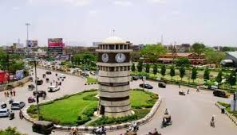
Mahant Ghasidas Memorial Museum, Vivekanand Sarovar (Burha Talab), Gandhi Udyan Park, Nandan Van Zoo and Safari.

Mahant Ghasidas Memorial Museum, Vivekanand Sarovar (Burha Talab), Gandhi Udyan Park, Nandan Van Zoo and Safari.
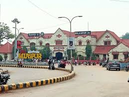
Achanakmar Wildlife Sanctuary, Ratanpur Temple, Malhar Archaeological Museum, Khutaghat Dam.
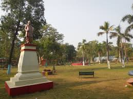
Maitri Bagh Zoo, Tandula Dam, Bhilai Steel Plant.
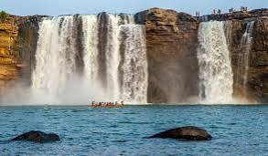
Chitrakote Falls, Tirathgarh Falls, Bastar Palace, Anthropological Museum.
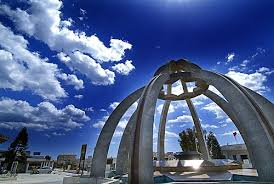
Chaiturgarh (Lafagarh) Fort, Kendai Waterfall, Kosagaigarh.
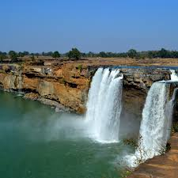
Known as the "Niagara of India", located on the Indravati River.
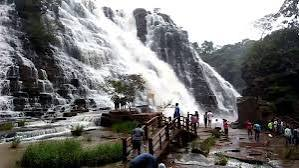
Stunning waterfall in Kanger Valley National Park.
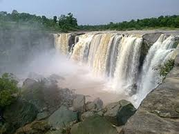
Beautiful waterfall near Koriya.
Famous for its biodiversity, Kotumsar Cave, and Tirathgarh Falls.
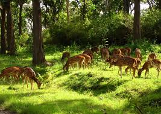
Rich in flora and fauna, located in Mahasamund district.
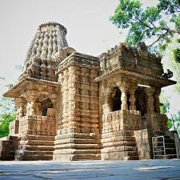
Known as the "Khajuraho of Chhattisgarh", located near Kawardha.
Archaeological site with ancient temples and Buddhist monasteries.
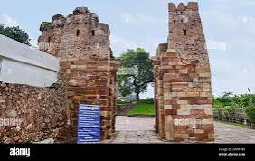
Historical town with ancient temples and fort ruins.
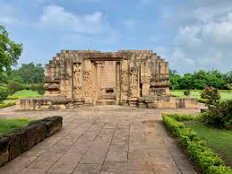
Archaeological site with ruins of ancient temples.

Known for ancient temples and archaeological significance.
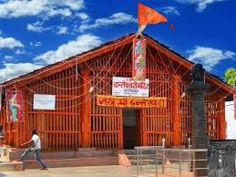
One of the 52 Shakti Peethas, located in Dantewada.
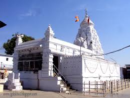
Famous Vishnu temple in Rajim.
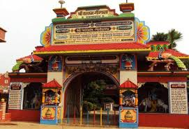
Birthplace of the saint Vallabhacharya.
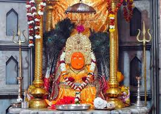
Located on a hilltop in Dongargarh.
Unique 75-day-long festival celebrated in Jagdalpur.
Historical palace with rich cultural heritage.
Explore the tribal markets and handicrafts in Bastar and other regions.
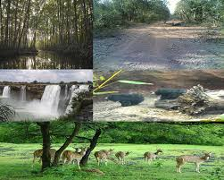
Known for its population of wild buffaloes and other wildlife.
Known for its diverse flora and fauna, located in Dhamtari district.
Rich in biodiversity and part of Achanakmar-Amarkantak Biosphere Reserve.